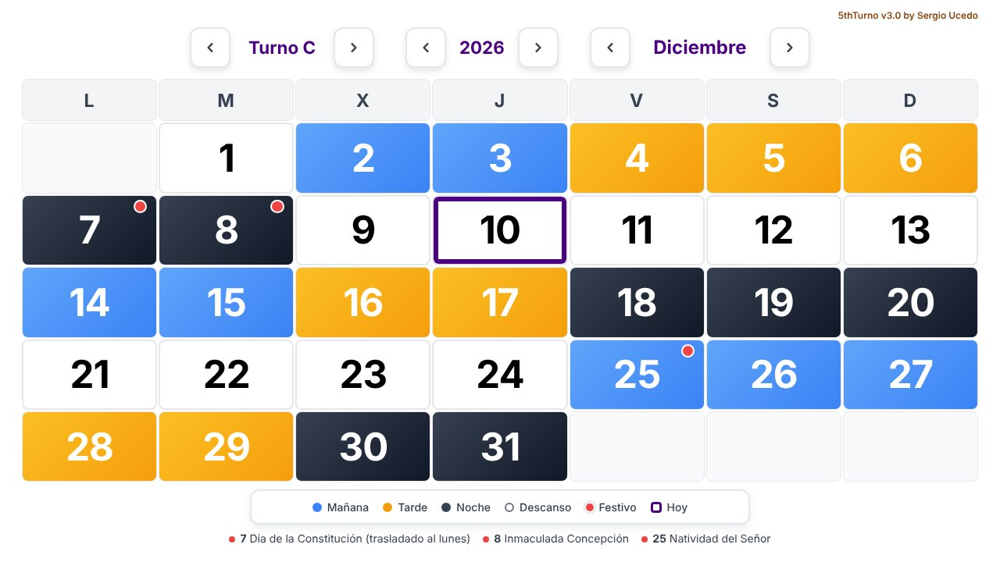

Gestión de turnos
Aplicación web con la que una planta con turnos rotativos planifica el trabajo de sus equipos. La diseñé, la programé y la mantengo desde 2020. Aquí explico qué problema resuelve y cómo funciona su calendario, que es la parte pública.
El problema
La planta de Parque La Presa trabaja las 24 horas con cinco equipos que rotan entre mañana, tarde, noche y descanso. Cada persona necesita saber qué turno le toca cualquier día del año, y la empresa, quién está en cada turno.
Antes de la aplicación, los cambios de turno y las horas extra se llevaban de palabra, y los cuadrantes salían con errores.
La aplicación
Es una aplicación web interna que usan a diario 55 personas. La desarrollé mientras trabajaba como jefe de turno en la misma planta, así que trato directamente con quienes la usan.
- • Planificación: la planta planifica en ella sus turnos.
- • Cambios de turno y horas extra: quedan registrados en un solo sitio.
- • Calendario: genera automáticamente el calendario de trabajo de cualquier grupo.
El código de la aplicación de la empresa no está publicado. Lo que sí es público es el calendario, 5thTurno, y a él se dedica el resto de esta página.
El calendario: 5thTurno
Una página web para consultar qué turno le toca a cada uno de los cinco equipos, de la A a la E, en cualquier mes entre 2000 y 2099.

- • Muestra el mes completo con un color por turno, y permite cambiar de equipo, de mes y de año.
- • Marca los festivos con un punto rojo sin tapar el turno: quien trabaja a turnos necesita saber qué le toca también en festivo.
- • Destaca el día de hoy y recuerda el equipo elegido entre visitas.
- • El mes entero cabe en la pantalla sin desplazarse, en móvil y en escritorio.
- • Todo se calcula en el navegador: no hay servidor, base de datos ni cuentas.
Cómo se calcula el turno
Los cinco equipos siguen el mismo ciclo de 35 días: tres tandas de 7 días de trabajo, seguidas de 4, 5 y 5 días de descanso.
M mañana · T tarde · N noche · D descanso
Cada equipo va 7 días por detrás del anterior. Con ese desfase, cada día hay exactamente un equipo de mañana, uno de tarde, uno de noche y dos descansando. Y como 35 días son cinco semanas justas, cada tanda empieza siempre en el mismo día de la semana.
El turno de un equipo en una fecha sale de una sola operación:
posición = DESFASE[equipo] + díasDesdeReferencia(fecha)
turno = CICLO[posición mod 35]La fecha de referencia es el 1 de enero de 2022, y el desfase de cada equipo es la posición del ciclo en la que estaba ese día. Para fechas anteriores la cuenta de días es negativa, así que el resto se calcula de forma que siempre quede entre 0 y 34.
Ejemplo: equipo C, 12 de octubre de 2026
- 1. Del 1 de enero de 2022 al 12 de octubre de 2026 hay 1.745 días.
- 2. El desfase del equipo C es 12: la posición es 12 + 1.745 = 1.757.
- 3. 1.757 mod 35 = 7.
- 4. La posición 7 del ciclo es un descanso: el equipo C libra.
No hace falta guardar ninguna tabla de turnos: la fórmula vale para cualquier fecha.
Festivos
Los festivos no se escriben a mano cada año: se calculan con una regla.
- • Nacionales y de Andalucía: diez de fecha fija, más Jueves y Viernes Santo. La fecha de la Pascua se obtiene con el algoritmo de Meeus, Jones y Butcher.
- • Traslados: los de fecha fija que caen en domingo pasan al lunes.
- • Locales de Loja: 25 de abril y 29 de agosto.
La regla reproduce los calendarios oficiales de Andalucía de 2026 y 2027. Como el calendario se aprueba cada año y puede apartarse de ella, hay dos tablas de excepciones para corregir un año concreto sin tocar el resto del código.
El código
HTML, CSS y JavaScript sin librerías ni proceso de compilación. La lógica está separada de la interfaz:
- • turnos.js: qué turno tiene un equipo en una fecha. No toca la página.
- • festivos.js: qué días son festivos en un año. No toca la página.
- • app.js: estado, pintado del mes, navegación y preferencias.
Como los dos primeros no dependen del navegador, las pruebas ejecutan exactamente el mismo código que la página.
Pruebas
Hay 19 pruebas automáticas, escritas con el ejecutor que incluye Node.js, sin dependencias. Comprueban, entre otras cosas:
- • Que cada día de 2000 a 2099 hay un equipo en cada turno.
- • Que el ciclo se repite cada 35 días y continúa sin saltos antes de 2022.
- • Que los equipos van separados exactamente 7 días.
- • Que los festivos de Andalucía de 2026 y 2027 coinciden con los oficiales.
Se ejecutan también en GitHub Actions con cada cambio.
git clone https://github.com/xerchion/5thTurno.git
cd 5thTurno
npm test